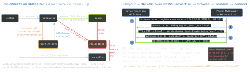

networking · folio
In one line: Network.framework (iOS 12) is Apple’s socket API: an NWConnection is one
flow driven by a state machine on your queue, an NWListener accepts flows and can
advertise a Bonjour service, an NWBrowser discovers services as endpoints the
connection resolves later. Local-network traffic is gated by the Local Network privacy
alert (iOS 14) — with no API to read its state. iOS 26 adds async
NetworkConnection / NetworkListener / NetworkBrowser.
Download PDF Print view LaTeX source


The classic API (iOS 12+)
NWConnection: one flow to anNWEndpoint(.hostPort, Bonjour.service,.url); inert untilstart(queue:), every handler on that queue. TCPreceivereturns arbitrary chunks — re-arm it after each;receiveMessagefor UDP / framed.NWParameters:.tcp .udp .tls .dtls,.quic(alpn:)(iOS 15). LAN knobs:requiredInterfaceType = .wifi,includePeerToPeer(AWDL: peers with no shared AP),acceptLocalOnly(listener).NWListener: port.any→listener.portonce ready. Settingserviceadvertises it (a rename shows inserviceRegistrationUpdateHandler);newConnectionHandlermuststartorcanceleach connection.NWBrowser:.bonjour(type:domain:)/.bonjourWithTXTRecord; changes.added/.removed/.changed(TXT). A result is a name, not an IP.NWProtocolFramer(iOS 13): your framing inside the stack (handleInput/handleOutput, atapplicationProtocols[0]). Multicast:NWConnectionGroup+NWMulticastGroup(iOS 14).
Example — advertise, discover, connect
let p = NWParameters.tcp; p.includePeerToPeer = true
let listener = try NWListener(using: p) // port: .any
listener.service = .init(name: "Kitchen", type: "_demo._tcp",
txtRecord: NWTXTRecord(["model": "K1"]))
listener.newConnectionHandler = { c in c.start(queue: .main) }
listener.start(queue: .main) // registers + announces
let browser = NWBrowser(for: .bonjourWithTXTRecord(
type: "_demo._tcp", domain: nil), using: p)
browser.browseResultsChangedHandler = { results, _ in
guard let r = results.first else { return } // r.metadata = TXT
let c = NWConnection(to: r.endpoint, using: p) // resolves later
c.stateUpdateHandler = { if case .waiting(let e) = $0 { print(e) } }
c.start(queue: .main) }
browser.start(queue: .main)iOS 26 — structured concurrency (WWDC25 session 250)
enum Msg: Codable { case hello(String), move(Int) }
try await NetworkListener { // result-builder stack
Coder(Msg.self, using: .json) { TLS() } // Codable framing
}.run { conn in // child task per peer
for try await (msg, _) in conn.messages { handle(msg) } }
let c = NetworkConnection(to: .hostPort(host: "printer.local",
port: 1029)) { TLV { TLS() } } // type-length-value
try await c.send(data, type: 1) // waits for .readyCancelled with its task. NetworkBrowser returns endpoints for Bonjour or Wi-Fi
Aware descriptors. The old API keeps working.
Wi-Fi Aware (iOS 26)
Peer-to-peer Wi-Fi, no access point, encrypted at the Wi-Fi layer. WiFiAware: pair once (DeviceDiscoveryUI / AccessorySetupKit), then NetworkListener / NetworkBrowser .wifiAware(...); Info.plist WiFiAwareServices; entitlement com.apple.developer.wifi-aware.
Local Network privacy (iOS 14, macOS 15)
| needs permission | does not |
|---|---|
| outgoing TCP to a LAN address | listen + accept TCP |
| send UDP unicast / connect UDP | receive UDP unicast |
| multicast + broadcast, both ways | non-.local names; LAN DNS / proxy |
resolve a .local name | WKWebView, Safari |
| Bonjour register / browse / resolve | AirPlay, printing, AccessorySetupKit |
Local = Wi-Fi/Ethernet subnet, multicast, broadcast, .local — not cellular or VPN.
- States: undetermined → alert at the first local operation → allowed / denied (Settings). In the background while undetermined: silently denied, not recorded.
- Info.plist:
NSLocalNetworkUsageDescription(alert text) +NSBonjourServices(_demo._tcp) — the app’s plist, even for extensions. com.apple.developer.networking.multicast(iOS, requested from Apple): raw multicast/broadcast, arbitrary or all service types. Declared types don’t need it.- Denied: browser
.waitingwith DNS error-65570(PolicyDenied); connection.waiting,unsatisfiedReason.localNetworkDenied. No status API — infer it; trigger the alert on purpose: connect a UDP socket to a local address. - Background: suspended → sockets may be reclaimed; rebuild on foreground.
Traps
- Tearing down on
.waiting— it retries;.failedis final. - “TCP delivers messages” — bytes. Length-prefix, framer, or iOS 26
TLV/Coder. - TLS to
kitchen.local: no public CA issues it — PSK or pin its self-signed cert. - Empty browse: type not in
NSBonjourServices, permission denied, or noincludePeerToPeerfor an AWDL-only peer. - Storing the device IP — DHCP moves it. Store the service name; re-resolve.
Remember
“Listener advertises, browser finds names, connection resolves; the alert gates all but accept. Waiting retries, failed is final.”